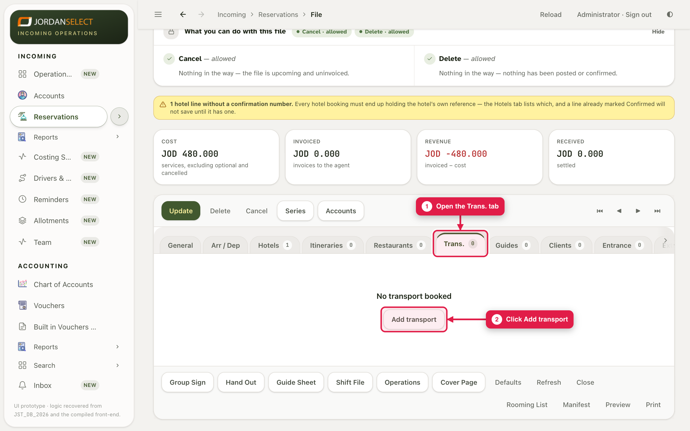
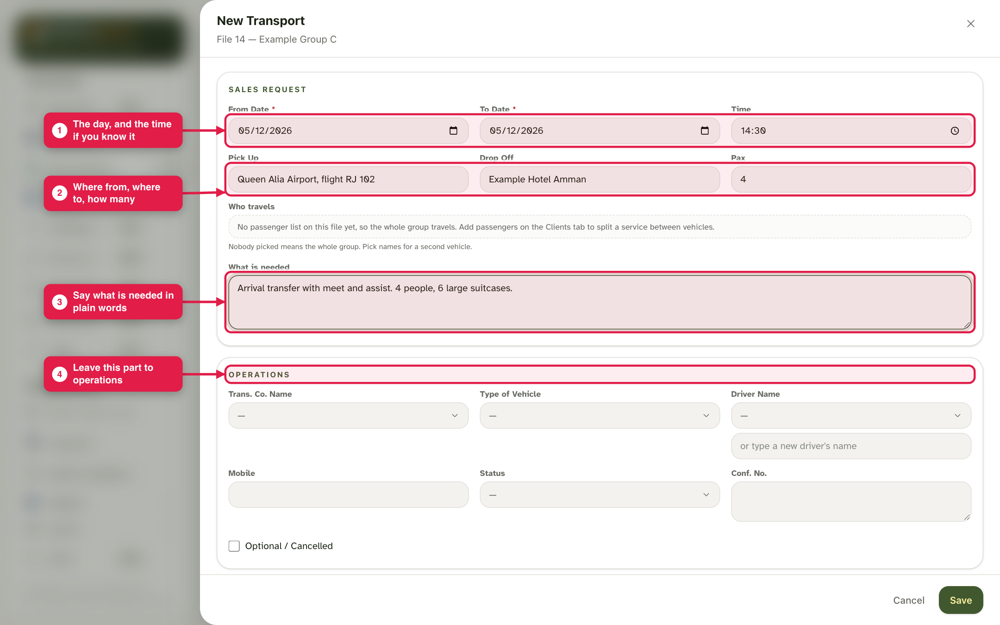
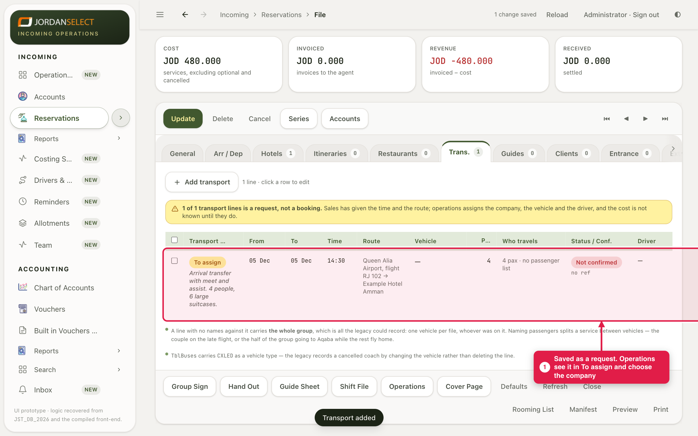

The group needs a transfer or a coach. You say what is needed; operations find the company, the vehicle and the driver.
WhoSales request it · operations assign it
WhereThe file → Trans. tab
Takes1 to 2 minutes per transfer
You needThe day, where from, where to, and how many people
How it works
You do not need to know which company will drive. Fill in the request and save it. It goes to the operations list To assign, and they add the company, vehicle and driver.
Example in this guide: an arrival transfer on 5 December at 14:30, from Queen Alia Airport (flight RJ 102) to Example Hotel Amman, for 4 people.
1. Write the request
1
Open the file, go to the Trans. tab and click Add transport.

The Trans. tab holds every transfer and coach day on the file.
2
Type the date, and the time if you know it. Fill Pick Up, Drop Off and Pax.
3
In What is needed, say it in plain words: meet and assist, luggage, a child seat. Leave the Operations part empty, and click Save.

The request. The Operations part (company, vehicle, driver, price) is for operations to fill.
Not the whole group?If only some people travel (a couple on a later flight, say), tick who is in this car. Empty means the whole file.
2. Saved as a request
4
The line is saved as a request. Operations see it in To assign, and the file shows a yellow note until they have chosen the company.

Waiting for operations. You do not need to tell them; the list does.
3. Check your work
The date and time match the flight.
Pick-up and drop-off are places a driver can find.
Anything special is written in What is needed.
Questions? Ask the operations manager. · Last checked: ____ · Screens shown are from a test copy of the CRM with made-up data.